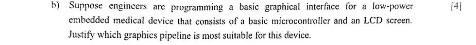
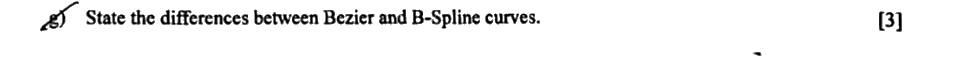
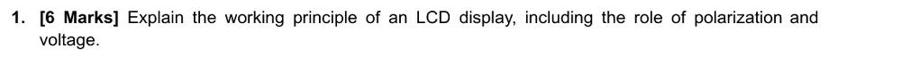
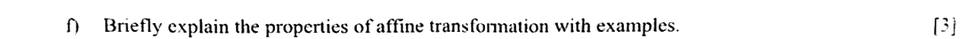

Theory Guide
Q1 has 7 short theory questions (3–4 marks each). You answer any 5. This page has every theory topic from your slides, every way each one has been asked in past finals and quizzes, the exact lines to write, a picture to draw, and the slide pages it came from.
Full playbook (math, worked answers): https://arkanullahs.github.io/cg-final-playbook/
Your must-list (15 topics)
Theory is spread wide: no small list covers every paper. These topics came in at least 2 of the last 6 finals, or in your F25 quizzes (the teacher takes questions from the quizzes). Learn these first and perfectly. The table checks it: on every recent final, at least 5 of the 7 Q1 questions were on this list, so these alone give you your 5.
- Graphics pipeline; hardware vs software ★★★ comes almost every time
- Bézier and B-spline properties ★★★ comes almost every time
- Displays and LCD ★★★ comes almost every time
- Affine, homogeneous, perspective ★★☆ comes often
- Frame-to-canonical = rotation then translation ★★☆ comes often
- Why triangles ★★☆ comes often
- GPU memory types ★★☆ comes often
- Phong specular highlight ★★☆ comes often
- Raster vs vector ★☆☆ rare: learn it last
- Lambertian (diffuse) shading ★☆☆ rare: learn it last
- Image-order vs object-order rendering ★☆☆ rare: learn it last
- Viewing transformation stages ★☆☆ rare: learn it last
- Rasterizing a triangle / Gouraud shading ★☆☆ rare: learn it last
- Facing toward or away from the camera ★☆☆ rare: learn it last
- Level of detail (LOD) ★☆☆ rare: learn it last
| Final | Q1 questions | On your must-list | Topics (bold = on the list) |
|---|---|---|---|
| SP25 | 7 | 7 | Th2 Th5 Th3 Th4 Th8 Th1 Th6 |
| F24 | 7 | 5 | Th3 Th10 Th5 Th19 Th20 Th16 Th11 |
| SP24 | 7 | 7 | Th7 Th10 Th13 Th11 Th5 Th6 Th16 |
| F23 | 7 | 7 | Th7 Th11 Th5 Th6 Th14 Th1 Th12 |
| SP23 | 7 | 6 | Th13 Th11 Th9 Th7 Th2 Th5 Th3 |
| F22 | 7 | 7 | Th7 Th10 Th12 Th11 Th4 Th14 Th6 |
For a spare question: the last ★☆☆ topics are short (5 minutes each); with them, every past paper is 7 of 7. Then read the wildcards once.
How to write a theory answer for full marks
- Line 1, define it in one sentence, using the slide’s words (they are in bold below).
- 3–4 points, one per line, each starting with a bold keyword. One point = about one mark.
- If the question says “compare” or “differences”, draw a table with 4–5 rows. Tables are fast and get full marks.
- Add one small diagram or example (the “Draw this” box). It shows you understand and covers a missing point.
- Answer every part of the question. “Explain X and mention one disadvantage” = two parts. Tick each part when done.
- Time: about 4 minutes per question. Never leave one blank: the one-line answer under each topic is worth marks on its own.
1Graphics pipeline; hardware vs software ★★★ comes almost every time
Stages: vertex processing (transform vertices: model → camera → projection) → primitive/shape assembly (group vertices into triangles, clip) → rasterization (find the pixels/fragments each primitive covers) → fragment processing (colour, texture, lighting per fragment) → tests and blending (z-buffer, alpha) → frame buffer → display.
| Hardware pipeline | Software pipeline | |
|---|---|---|
| Runs on | GPU, many parallel cores | CPU |
| Speed | real time | slower |
| Flexibility | fixed stages + programmable shaders | fully customisable |
| Examples | OpenGL, Vulkan, DirectX on a GPU | software rasterizers, offline ray tracers |
Old GPUs had a fixed-function pipeline; modern GPUs are programmable and also run compute shaders.
Programmable stages (SP24): vertex shader (transforms each vertex, per-vertex lighting), optional tessellation and geometry shaders (create or change primitives), and the fragment (pixel) shader (colour, texture, per-pixel lighting of each fragment). Rasterization, clipping and depth/blending stay fixed-function (configurable only).
Why rasterization comes before fragment shading (F25 Quiz 1B): the fragment shader works per pixel-sized fragment, and fragments only exist after rasterization has found which pixels each triangle covers (with interpolated depth, colour, normals, texture coordinates). Shading earlier would mean shading whole triangles or vertices only; doing it after rasterization shades exactly the visible samples, in parallel.
SP25 scenario (microcontroller + small LCD): software pipeline. There is no GPU, power and memory are limited, graphics are simple 2D, so the CPU draws directly into a frame buffer with integer algorithms (midpoint line/circle) — no need for a hardware pipeline.
- FINAL SP25 final Q1(b) · 4 marks: “Suppose engineers are programming a basic graphical interface for a low-power embedded medical device that consists of a basic microcontroller and an LCD screen. Justify which graphics pipeline is most suitable for this device.” → answer 1
- FINAL F24 final Q1(c) · 3 marks: “Briefly describe different kinds of hardware graphics pipelines.” → answer 2
- FINAL SP24 final Q1(e) · 3 marks: “Explain the programmable stages of the graphics pipeline.” → answer 3
- FINAL F23 final Q1(c) · 3 marks: “Briefly explain the different stages of the graphics pipeline.” → answer 4
- QUIZ F25 Quiz 1 · Set B · Q1: “Describe the stages of the Graphics Pipeline. Explain why rasterization is placed before fragment shading.” → answer 4
- QUIZ F23 Quiz 1 · Set D · Q1: “Explain different stages of the graphics pipeline.” → answer 4
- FINAL SP23 final Q1(f) · 3 marks: “State the differences between hardware and software pipelines.” → answer 5
See the exact question crops

Answer 1: for “Suppose engineers are programming a basic graphical interface for a lo…”
Plan: Look at the device’s limits (no GPU, low power, small LCD, simple interface), compare the two kinds of pipeline against them, and choose.
- The device. A basic microcontroller (no GPU), a small LCD, battery or low power, and a simple 2D interface: text, buttons, numbers, maybe a graph of readings.
- Hardware pipeline. The pipeline stages (vertex processing, rasterization, fragment shading, z-buffer) run on a dedicated GPU with many parallel cores. It gives real-time 3D, but it needs extra chip area, cost and power, and this device has no GPU.
- Software pipeline. The same stages are written as ordinary code and run on the CPU/microcontroller, drawing into a frame buffer in memory that is sent to the LCD. It is slower but needs no extra hardware.
- Speed is enough. A basic interface has few primitives (lines, rectangles, characters), a small resolution and a low refresh rate, so the microcontroller can draw it in time.
- Other advantages. Lower power (longer battery life), lower cost, simpler and more reliable hardware (important for a medical device), and full control over the drawing code.
If time is short, write at least: A software graphics pipeline on the microcontroller is most suitable: no GPU is available or needed, it saves power and cost, and a simple 2D interface does not need hardware acceleration.
Answer 2: for “Briefly describe different kinds of hardware graphics pipelines.”
Plan: A hardware pipeline is the graphics pipeline built into the GPU. Describe its kinds: fixed-function, programmable, and the modern unified / ray-tracing hardware.
- Fixed-function pipeline (early GPUs, OpenGL 1.x): every stage (transform and lighting, rasterization, texturing, blending) is hard-wired. The programmer can only switch features on/off and set parameters. Fast, but the algorithms cannot be changed.
- Programmable pipeline: key stages run small programs (shaders) written by the programmer (GLSL / HLSL): the vertex shader, optional tessellation and geometry shaders, and the fragment shader. Clipping, rasterization and the depth test stay fixed. Any lighting model or effect becomes possible.
- Unified shader architecture: the same general cores run every shader type and also compute shaders (general GPU computing), balancing the load automatically.
- Ray-tracing / AI hardware: modern GPUs add RT cores (ray–triangle tests) and Tensor cores (matrix maths for denoising and upscaling) beside the rasterization pipeline.
If time is short, write at least: Fixed-function (hard-wired), programmable (shaders), and modern unified-shader GPUs with ray-tracing and AI cores.
Answer 3: for “Explain the programmable stages of the graphics pipeline.”
Plan: List the programmable stages in pipeline order and the job of each; mention the fixed stages between them.
- Vertex shader (per vertex): transforms the position by the model-view-projection matrix, does per-vertex lighting, passes attributes (normal, colour, texture coordinates) on.
- Tessellation shaders (optional, control + evaluation): subdivide patches into many smaller triangles for more detail near the camera.
- Geometry shader (optional, per primitive): can create, remove or change primitives (e.g. particles, fur, shadow volumes).
- Fixed stages in between: primitive assembly, clipping, perspective divide, viewport, rasterization.
- Fragment (pixel) shader (per fragment): computes the final colour from textures and lighting, can discard the fragment.
- Then fixed: depth test, blending, frame buffer. (Compute shaders run general programs outside the pipeline.)
If time is short, write at least: Vertex → (tessellation) → (geometry) → fragment shaders are programmable; clipping, rasterization and the depth test are fixed.
Answer 4: for “Briefly explain the different stages of the graphics pipeline.”
Plan: List the stages in order with the job of each, then explain why rasterization comes before fragment shading.
- Application (CPU): scene, user input, sends geometry and commands.
- Vertex processing: model → world → camera → projection transform of every vertex; per-vertex lighting (vertex shader).
- Primitive assembly and clipping: group vertices into triangles, cut away what is outside the view volume.
- Perspective divide and viewport: divide by w, map to screen pixel coordinates.
- Rasterization: find the pixels (fragments) each triangle covers; interpolate depth, colour, normals, texture coordinates with barycentric weights.
- Fragment processing: colour each fragment from texture and lighting (fragment shader).
- Per-fragment operations: depth test (z-buffer), alpha blending → frame buffer → display.
- Why rasterization comes before fragment shading: fragments do not exist until rasterization creates them; the fragment shader needs the per-pixel inputs (interpolated normal, texture coordinate, depth) that only rasterization produces; and only pixels a triangle really covers are shaded, so no work is wasted.
If time is short, write at least: Application → vertex processing → assembly/clipping → divide/viewport → rasterization → fragment processing → depth/blend → frame buffer.
Answer 5: for “State the differences between hardware and software pipelines.”
Plan: Define both, then compare in a table.
- Hardware pipeline: the pipeline stages run on dedicated graphics hardware (GPU).
- Software pipeline: the same stages are implemented as programs running on the general-purpose CPU.
Hardware pipeline Software pipeline Runs on GPU, thousands of parallel cores CPU, a few cores Speed real time, millions of triangles slower Flexibility fixed stages + programmable shaders fully customisable, any algorithm Cost / power needs a GPU: more cost and power no extra hardware Examples OpenGL, Vulkan, DirectX on a GPU software rasterizers, offline ray tracers, embedded devices
If time is short, write at least: Hardware = GPU, fast but fixed structure; software = CPU code, flexible and cheap but slow.
The graphics pipeline: what happens to a triangle on its way to the screen.
- Vertex processing: transform every vertex (model → camera → projection), per-vertex lighting.
- Primitive assembly: group vertices into triangles; clip what is outside the view; cull back faces.
- Rasterization: find the pixels (fragments) each triangle covers, interpolating values across it.
- Fragment processing: colour each fragment (texture, lighting).
- Blending / output: z-buffer test and alpha blending, then write to the frame buffer.
- Hardware (GPU) runs these stages in parallel and very fast; a software renderer runs them on the CPU: flexible but slow.
2Bézier and B-spline properties ★★★ comes almost every time
Bézier: passes through the first and last control points; tangent at each end points along the first/last control-polygon edge; stays inside the convex hull of its points; degree = number of points − 1.
Problems: global control (moving one point changes the whole curve); many points → high degree → expensive and wiggly. Fix: B-splines (or joining low-degree Bézier pieces).
B-spline: made of low-degree segments, each using only k + 1 neighbouring points → local control, degree fixed however many points; neighbouring segments join smoothly. Uniform does not touch the end points; open uniform repeats the end knots so it starts at P0 and ends at Pn.
Local vs global control (F25 Quiz 1D): a Bézier weight C(d,i)(1−t)^(d−i)t^i is non-zero for every t in (0, 1), so moving one point changes the whole curve (global). A B-spline segment uses only k + 1 neighbouring points, so a point affects only the few segments that contain it (local).
Uniform vs open uniform (F25 Quiz 1F): uniform B-splines use evenly spaced knots, every segment has the same weights, and the curve does not reach P0 or Pn. Open uniform repeats the end knots k + 1 times, so the curve starts at P0 and ends at Pn, tangent to the first and last control edges. CAD uses open uniform because designers need the curve to pass exactly through its end points (to join parts, meet constraints), while keeping local control in between.
de Casteljau: P(i,j) = (1−u)P(i,j−1) + uP(i+1,j−1); repeated interpolation of neighbours; expanding P(0,n) gives the Bernstein form Σ C(n,i)(1−u)^(n−i)u^i Pᵢ.
- FINAL F24 final Q1(g) · 3 marks: “State the differences between Bezier and B-Spline curves.” → answer 1
- FINAL SP24 final Q1(d) · 3 marks: “State the differences between the Bezier Curve and the B-spline curve.” → answer 1
- FINAL F23 final Q1(b) · 3 marks: “Compare the characteristics of open uniform B-spline curves with standard uniform B-spline curves.” → answer 2
- QUIZ F25 Quiz 1 · Set F · Q1: “Compare Uniform B-Spline and Open Uniform B-Spline curves. Explain why Open Uniform B-Spline curves are more widely used in CAD systems.” → answer 2
- FINAL SP23 final Q1(b) · 3 marks: “Explain why the degree of a B-spline curve remains unaffected by the number of control points used in the curve.” → answer 3
- FINAL F22 final Q1(d) · 3 marks: “State the problems associated with the higher degree Bezier Curve. Explain how this problem can be solved.” → answer 4
- FINAL SP21 final Q2(b) (old): “Discuss the limitations of Bezier curve.” → answer 4
- QUIZ SP25 Quiz 1 · Set C · Q1: “State the properties and the problems associated with the Bezier Curve.” → answer 4
- QUIZ F23 Quiz 1 · Set F · Q1: “State the properties of the Bezier curve.” → answer 4
- QUIZ F25 Quiz 1 · Set D · Q1: “Explain why B-Spline curves exhibit local control whereas Bézier curves exhibit global control.” → answer 5
See the exact question crops

Answer 1: for “State the differences between Bezier and B-Spline curves.”
Plan: Compare the two curves point by point in a table.
Bézier B-spline Control global: moving one point changes the whole curve local: one point changes only a few segments Degree n + 1 points → degree n chosen degree, independent of the number of points Structure one polynomial for the whole curve many low-degree segments joined smoothly End points always passes through P0 and Pn uniform: no; open uniform: yes Basis Bernstein polynomials B-spline basis functions over knot intervals Cost with many points high degree, expensive, wiggly cheap, each segment uses only k points Convex hull inside the hull of all points each segment inside the hull of its k points (tighter)
If time is short, write at least: Bézier: one global, high-degree polynomial through the end points; B-spline: piecewise low-degree with local control.
Answer 2: for “Compare the characteristics of open uniform B-spline curves with stand…”
Plan: Define both with their knot vectors, compare their behaviour, then explain why CAD prefers open uniform.
- Uniform B-spline: knots equally spaced, e.g. {0, 1, 2, 3, 4, 5, 6, 7}; every segment uses the same (shifted) blending functions.
- Open uniform B-spline: the end knots are repeated k times (k = order = degree + 1), e.g. quadratic with 5 points: {0, 0, 0, 1, 2, 3, 3, 3}; the first and last segments get special blending functions.
Uniform Open uniform End points does not pass through P0, Pn (quadratic starts at ½(P0 + P1)) passes through P0 and Pn End tangents not controlled along P0P1 and Pn−1Pn (like Bézier) Blending functions same for every segment special first and last segments Local control yes yes Coverage shorter, stops inside the control polygon spans the whole polygon - Why CAD uses open uniform: designers need a curve to start and end exactly at given points so parts join without gaps; the end tangents are predictable (like Bézier) while local control is kept inside; several curves join easily; it is the clamped knot vector used by NURBS, the CAD standard.
If time is short, write at least: Open uniform repeats the end knots so the curve touches its end points (Bézier-like ends, B-spline local control): the reason CAD prefers it.
Answer 3: for “Explain why the degree of a B-spline curve remains unaffected by the n…”
Plan: Explain the piecewise structure: the degree belongs to each segment, not to the whole curve.
- Bézier: one polynomial over all points, so n + 1 points force degree n.
- B-spline: made of segments. Each segment is a polynomial of the chosen degree (k − 1) and uses only k neighbouring control points.
- Basis functions: each N_i,k(t) is non-zero only over k knot intervals and its degree is fixed by the order k, not by the total number of points.
- More control points → more segments, same degree. Example: 10 points with a quadratic B-spline → 10 − 2 = 8 segments, each of degree 2; a Bézier curve through the same 10 points would have degree 9.
- Benefits: low cost per segment, no wild wiggles, and local control.
If time is short, write at least: The degree is set by the order k of each segment; adding points only adds segments.
Answer 4: for “State the problems associated with the higher degree Bezier Curve. Exp…”
Plan: List the properties with a one-line reason each, then the problems and how they are solved.
- Endpoint interpolation: Q(0) = P0 and Q(1) = Pn.
- End tangents: Q′(0) = n(P1 − P0), Q′(1) = n(Pn − Pn−1): the curve leaves along the first edge and arrives along the last.
- Convex hull: the Bernstein weights are ≥ 0 and add to 1, so the curve stays inside the convex hull of its control points.
- Degree: n + 1 control points → degree n.
- Affine invariance: transforming the control points transforms the curve (no need to transform every curve point).
- Symmetry and variation diminishing: reversing the points gives the same curve; the curve wiggles no more than its control polygon.
- Problems: (1) global control: moving one point changes the whole curve; (2) many points → high degree → expensive, numerically unstable, the curve stays far from the control polygon and is hard to shape; (3) joining several curves smoothly needs care.
- Solutions: use B-splines (fixed low degree, local control) or join low-degree Bézier pieces with collinear control points at the joints (smooth C¹ joins).
If time is short, write at least: Through the end points, tangent to the end edges, inside the convex hull, degree = points − 1, affine invariant; problems: global control and high degree, solved by B-splines or piecewise curves.
Answer 5: for “Explain why B-Spline curves exhibit local control whereas Bézier curve…”
Plan: Compare the basis functions: Bernstein weights are non-zero everywhere, B-spline basis functions only on a few intervals.
- Bézier: Q(t) = Σ B_i,n(t)·P_i with B_i,n(t) = C(n, i)(1 − t)n−iti, which is positive for every t in (0, 1). So every control point influences every point of the curve: moving one point changes the whole curve (global control).
- B-spline: Q(t) = Σ N_i,k(t)·P_i, where N_i,k(t) is non-zero only on k knot intervals. So P_i affects only the k segments where its basis function is non-zero; the rest of the curve does not move (local control).
- Example (7 points): quadratic B-spline segment S_j uses P_j, P_j+1, P_j+2, so P3 is used only by S1, S2 and S3. In a degree-6 Bézier curve the weight of P3, 20t³(1 − t)³, is non-zero for every t, so the whole curve moves.
If time is short, write at least: Bernstein weights are non-zero over the whole curve (global); B-spline basis functions have short support (local).
Properties of Bézier and B-spline curves.
- A Bézier curve passes through the first and the last control point (not the middle ones).
- At each end it leaves along the first / last edge of the control polygon (end tangents).
- It always stays inside the convex hull of its control points; degree = number of points − 1.
- Problem: global control. Moving one point changes the whole curve, and many points mean a high degree.
- B-spline: built from low-degree segments; each point affects only a few segments (local control), and the joins stay smooth.
3Displays and LCD ★★★ comes almost every time
Emissive displays make their own light in every pixel (LED, OLED, plasma, CRT); each pixel has R, G, B sub-pixels. Transmissive displays use a backlight and pixels act as light valves (LCD; projectors).
How an LCD pixel works: backlight → first polarizer → liquid-crystal layer → colour filter → second polarizer (crossed at 90°). With no voltage the crystals twist the light by 90°, so it passes the second polarizer (bright). With voltage the crystals untwist, the light is not rotated and is blocked (dark). The voltage level gives intermediate grey levels; R, G, B filters give colour.
OLED (F25 Quiz 1E): each sub-pixel is an organic light-emitting diode: current flows from anode to cathode through organic layers and the organic material emits light (electroluminescence), brightness set by the current. No backlight and no liquid crystal, so black is truly off (infinite contrast), thinner, faster, wide viewing angle, can be flexible; risks: burn-in, blue sub-pixels age faster. Sub-pixels: R, G, B side by side; many phones use PenTile (RGBG: two greens shared between neighbours, larger blue) because the eye is most sensitive to green and blue wears out fastest.
Sub-pixel layouts: vertical RGB stripe (LCD monitors), delta/triangle (CRT, some OLED), PenTile (shared sub-pixels, extra green; phones).
- FINAL SP24 final Q1(a) · 3 marks: “Explain how a transmissive device works with an example.” → answer 1
- FINAL F23 final Q1(a) · 3 marks: “Explain the role of liquid crystal in a transmissive device with an example.” → answer 1
- FINAL F22 final Q1(a) · 3 marks: “Explain how a transmissive device works with an example.” → answer 1
- FINAL F21 final Q7(b) (old): “How does a transmissive device work? Explain with appropriate diagrams.” → answer 1
- QUIZ SP25 Quiz 1 · Set B · Q1: “Explain the working principle of an LCD display, including the role of polarization and voltage.” → answer 1
- FINAL SP23 final Q1(d) · 3 marks: “Describe how emissive display device produces colored images.” → answer 2
- QUIZ F23 Quiz 1 · Set A · Q1: “Explain how an emissive device works with an example.” → answer 2
- QUIZ F25 Quiz 1 · Set E · Q1: “Explain the working mechanism of OLED displays, including how the sub-pixels are oriented in it.” → answer 3
- QUIZ SP25 Quiz 1 · Set A · Q1: “Explain the role of sub-pixels and their different orientations in display devices.” → answer 4
See the exact question crops

Answer 1: for “Explain how a transmissive device works with an example.”
Plan: A transmissive device does not make light; it controls a backlight. Describe the layers in order, what the liquid crystal does with and without voltage, and how colour is made.
- Transmissive device: the pixels do not emit light; a backlight shines through them and each pixel acts as a light valve. Example: an LCD monitor or phone LCD.
- Layers (back to front): backlight → rear polarizer (e.g. vertical) → glass with transparent electrodes + liquid-crystal layer → colour filter (R, G or B per sub-pixel) → front polarizer, crossed at 90° (horizontal) → viewer. Diagram:
backlight | polarizer ↕ | LC + electrodes | colour filter | polarizer ↔ | eye. - No voltage: the liquid-crystal molecules are arranged in a 90° twist (twisted nematic). Light passing through has its polarization rotated by 90°, so it passes the front polarizer: the sub-pixel is bright.
- Voltage applied: the molecules line up with the electric field (untwist), the polarization is not rotated, and the crossed front polarizer blocks the light: the sub-pixel is dark.
- In between: a partial voltage gives a partial twist → grey levels. In an active-matrix (TFT) LCD each sub-pixel has its own transistor that holds this voltage.
- Colour: each pixel has three sub-pixels with red, green and blue filters; their brightness levels mix additively in the eye.
- Role of the liquid crystal: it is the voltage-controlled light valve, rotating the light’s polarization or not.
If time is short, write at least: Backlight → polarizer → liquid crystal (twists light unless voltage is applied) → colour filter → crossed polarizer: voltage controls how much light each sub-pixel passes.
Answer 2: for “Describe how emissive display device produces colored images.”
Plan: Define emissive devices, explain how a pixel makes colour from R, G, B sub-pixels, and give an example (OLED) in detail.
- Emissive device: every pixel makes its own light; no backlight. Examples: LED, OLED, plasma, CRT.
- Colour: each pixel has three sub-pixels emitting red, green and blue light. Their intensities (set by current, voltage or electron beam) mix additively in the eye: all off = black, all full = white, other mixes = any colour.
- Example, OLED: layers: anode (transparent ITO) → hole transport layer → organic emissive layer → electron transport layer → cathode. With a voltage, holes and electrons meet in the emissive layer and recombine, releasing light (electroluminescence). The organic material sets the colour; the current sets the brightness; each sub-pixel has its own transistor (active matrix).
- Other examples: CRT: an electron beam hits R, G, B phosphor dots that glow; plasma: gas discharge makes UV light that excites phosphors.
- Result: true black (pixel off), high contrast, wide viewing angle.
If time is short, write at least: Each pixel’s R, G, B sub-pixels emit their own light, and their mix gives the colour (e.g. OLED: electrons and holes recombine in an organic layer and emit light).
Answer 3: for “Explain the working mechanism of OLED displays, including how the sub-…”
Plan: Describe the OLED layers, how light is produced, then the sub-pixel arrangements.
- Layers: glass or plastic substrate → anode (transparent ITO) → hole injection/transport layer → organic emissive layer → electron transport layer → metal cathode.
- Working: with a voltage, the anode injects holes and the cathode injects electrons; they move into the emissive layer and recombine, releasing energy as light (electroluminescence). The organic material sets the colour; the current sets the brightness; each sub-pixel has its own thin-film transistor (AMOLED).
- Sub-pixels: each pixel is made of red, green and blue sub-pixels whose light mixes additively.
- Orientations: RGB stripe (three vertical stripes side by side); PenTile RGBG (each pixel has a green sub-pixel plus a shared red or blue one; green is most numerous because the eye is most sensitive to it, blue is larger because blue material ages fastest); diamond layout (diamond-shaped red/blue with smaller greens).
- Advantages: no backlight → true black, very high contrast, thin and flexible, wide viewing angle, fast response. Disadvantages: burn-in, faster ageing of blue sub-pixels.
If time is short, write at least: Electrons and holes recombine in an organic layer and emit light per sub-pixel; sub-pixels are arranged as RGB stripes, PenTile RGBG or diamonds.
Answer 4: for “Explain the role of sub-pixels and their different orientations in dis…”
Plan: Explain why pixels are split into sub-pixels, then the common orientations and why the orientation matters.
- Role: a single pixel cannot produce an arbitrary colour; it is made of three sub-pixels (red, green, blue). Their intensities mix additively in the eye to give any colour.
- Sub-pixel rendering: the sub-pixels can be treated as separate samples (e.g. ClearType text), giving sharper text horizontally.
- RGB stripe: three vertical stripes R, G, B side by side (most LCD monitors). BGR: the same in reversed order.
- Delta (triangle): sub-pixels arranged in triangles (CRTs, some displays).
- PenTile RGBG and diamond: OLED layouts with more green sub-pixels (the eye is most sensitive to green) and larger blue ones (blue ages fastest).
- Why orientation matters: sub-pixel text rendering must know the order and direction; rotating a screen turns horizontal stripes into vertical ones and changes the result.
If time is short, write at least: Sub-pixels (R, G, B) mix into each pixel’s colour; their layout (RGB/BGR stripe, delta, PenTile, diamond) affects sharpness and text rendering.
How an LCD pixel works (left) and why OLED is different (right).
- Backlight: an LCD makes no light itself; a white light behind the panel shines through.
- Polarizer 1 lets through only light vibrating in one direction.
- The liquid crystal twists that direction; the voltage on the pixel controls how much it twists.
- The colour filter gives each sub-pixel red, green or blue.
- Polarizer 2 passes only the twisted part, so the twist decides the brightness. Black still leaks a little light.
- OLED: every sub-pixel emits its own light, so an off pixel is a true black (better contrast, thinner panel).
- LCD = transmissive display (a light valve); OLED, LED, CRT = emissive displays.
4Affine, homogeneous, perspective ★★☆ comes often
Affine transformation: x′ = Ax + t (a linear map plus a translation); in homogeneous form the last row is [0 0 1]. Translation, rotation, scaling, shearing and reflection are all affine.
- Properties: straight lines stay straight, parallel lines stay parallel, ratios of lengths along a line (and of parallel segments) are preserved; angles and lengths may change.
- Shear example (SP25): x′ = x + y. AB from (0,0) to (2,0) stays (0,0)–(2,0); CD from (0,1) to (4,1) becomes (1,1)–(5,1). Both remain horizontal (parallel) and their lengths stay 2 : 4 → affine.
Homogeneous coordinates add a w = 1 coordinate so translation becomes a matrix product; every transform composes into one matrix, and the w component makes the perspective divide possible.
Perspective is not affine: it divides by depth z (last row [0 0 1 0], so w ≠ 1). Parallel lines meet at vanishing points and length ratios change with distance.
- FINAL SP25 final Q1(g) · 4 marks: “Describe why perspective projection is considered a non-affine transformation.” → answer 1
- FINAL F22 final Q1(g) · 3 marks: “Describe why perspective projection is considered a non-affine transformation.” → answer 1
- FINAL SP24 final Q1(f) · 3 marks: “Briefly explain the properties of affine transformation with examples.” → answer 2
- FINAL F21 final Q2(b) (old): “What are the properties of affine transformation? Mention an example of non-affine transformation operation.” → answer 2
- FINAL F23 final Q1(d) · 3 marks: “Describe why horizontal shearing is considered an affine transformation.” → answer 3
- FINAL SP22 final Q2(b) (old): “Explain the problems associated with it if homogeneous coordinates were not used in matrix transformation.” → answer 4
- QUIZ SP25 Quiz 2 · Set B · Q1: “Show that affine transformations preserve the ratio of lengths of parallel line segments with an example.” → answer 5
See the exact question crops

Answer 1: for “Describe why perspective projection is considered a non-affine transfo…”
Plan: State what affine means, write the perspective equations and matrix, and show which affine properties fail.
- Affine: x′ = A·x + t (a linear map plus a translation). It keeps straight lines straight, parallel lines parallel and ratios of lengths along a line. In homogeneous form the last row is [0 0 0 1], so w stays 1.
- Perspective: x_s = n·x/z, y_s = n·y/z. The new coordinates are divided by the depth z: not of the form A·x + t.
- Matrix: P = [[n, 0, 0, 0], [0, n, 0, 0], [0, 0, n + f, −fn], [0, 0, 1, 0]]. Its last row is [0 0 1 0], so w′ = z ≠ 1 and a homogeneous divide by w is needed: a non-linear step.
- Parallel lines are not preserved: parallel railway lines meet at a vanishing point in the image.
- Ratios are not preserved: equal lengths at different depths look different (far ones smaller); the midpoint of a 3D segment does not project to the midpoint of its image.
- Example (image plane at distance 1): points (1, 0) at depth 2 and at depth 4 project to x = 1/2 and x = 1/4: the same x gives different screen positions depending on depth.
If time is short, write at least: Perspective divides by depth (w = z), so it breaks parallelism and length ratios: it is not affine.
Answer 2: for “Briefly explain the properties of affine transformation with examples.”
Plan: Define affine transformations, list their properties, give examples with matrices, and give a non-affine example.
- Definition: x′ = A·x + t (a linear map plus a translation); in homogeneous coordinates a 3 × 3 matrix with last row [0 0 1].
- Properties: (1) lines map to lines; (2) parallel lines stay parallel; (3) ratios of lengths along a line (and of parallel segments) are kept, so midpoints map to midpoints; (4) a composition of affine maps is affine (one matrix); (5) invertible when det A ≠ 0; (6) lengths and angles need not be kept (scaling, shear change them).
- Examples: translation T(tx, ty); rotation R(θ) = [[cos θ, −sin θ], [sin θ, cos θ]]; scaling S(sx, sy); reflection Ref_x = diag(1, −1); shear Sh_x(m): x′ = x + m·y.
- Example of the properties: a shear turns a square into a parallelogram: opposite sides stay parallel, but the right angles change.
- Non-affine example: perspective projection x_s = n·x/z (divides by depth; parallel lines meet at a vanishing point).
If time is short, write at least: Affine = A·x + t: keeps lines, parallelism and ratios along lines (not lengths/angles); translation, rotation, scaling, reflection and shear are affine, perspective is not.
Answer 3: for “Describe why horizontal shearing is considered an affine transformatio…”
Plan: Write the shear in the form A·x + t, then show the affine properties on an example.
- Horizontal shear: x′ = x + m·y, y′ = y. In matrix form [x′, y′]ᵀ = [[1, m], [0, 1]]·[x, y]ᵀ + [0, 0]ᵀ: exactly A·x + t with t = 0, so it is affine. Homogeneous: [[1, m, 0], [0, 1, 0], [0, 0, 1]], last row [0 0 1].
- Example (m = 1): the unit square (0, 0), (1, 0), (1, 1), (0, 1) → (0, 0), (1, 0), (2, 1), (1, 1).
- Lines stay lines and parallel sides stay parallel: the result is a parallelogram; the bottom and top edges are still horizontal, the slanted sides are parallel to each other.
- Ratios kept: the midpoint (0.5, 1) of the top edge maps to (1.5, 1), the midpoint of the new top edge.
- Not rigid: the 90° corner becomes 45°, so angles change; that is allowed for affine maps.
If time is short, write at least: Shear is x′ = A·x with A = [[1, m], [0, 1]], so it is affine: it keeps lines, parallelism and ratios but changes angles.
Answer 4: for “Explain the problems associated with it if homogeneous coordinates wer…”
Plan: Show what goes wrong for translation, composition, perspective and directions without the extra coordinate.
- Translation is not a matrix product: in 2D, x′ = x + t is an addition; a 2 × 2 matrix can only rotate, scale, shear or reflect.
- Mixed forms: every transformation becomes x′ = A·x + t; a sequence gives x″ = A₂(A₁x + t₁) + t₂, so a matrix and a vector must be tracked separately.
- No single composite matrix: a chain such as rotation about a point T·R·T⁻¹ cannot be stored and applied as one matrix, and inverses are clumsy.
- Perspective impossible: the divide by depth cannot be written without the extra w coordinate.
- Points vs directions: without w (1 for points, 0 for directions) they cannot be told apart.
- With homogeneous coordinates every transformation is one 3 × 3 (or 4 × 4) matrix and any chain is a single product, which is what GPUs use.
If time is short, write at least: Without homogeneous coordinates translation and perspective are not matrix products, so transformations cannot be combined into one matrix.
Answer 5: for “Show that affine transformations preserve the ratio of lengths of para…”
Plan: Prove it in general with vectors, then check with numbers.
- Setup: affine map F(x) = A·x + t. Two parallel segments PQ and RS: Q − P = d and S − R = k·d (parallel means one direction is a multiple of the other). Their length ratio is |S − R| / |Q − P| = |k|.
- Images: F(Q) − F(P) = (A·Q + t) − (A·P + t) = A(Q − P) = A·d. F(S) − F(R) = A(S − R) = A(k·d) = k·A·d.
- Conclusion: F(S) − F(R) = k·(F(Q) − F(P)): the images are still parallel and their length ratio is still |k|. The translation t cancels and A, being linear, keeps the factor k.
- Example: P(0, 0), Q(2, 0), R(0, 1), S(4, 1) (ratio 4/2 = 2). Take A = [[2, 1], [0, 3]], t = (1, 1): P′ = (1, 1), Q′ = (5, 1), R′ = (2, 4), S′ = (10, 4).
- Check: |P′Q′| = 4, |R′S′| = 8 → ratio 8/4 = 2 ✓, and both images are horizontal (still parallel). The lengths changed (2 → 4), the ratio did not.
If time is short, write at least: F(S) − F(R) = k·(F(Q) − F(P)), so affine maps keep parallel segments parallel with the same length ratio.
Affine, homogeneous and perspective transformations.
- Affine: x′ = Ax + t, a linear map plus a translation (translate, rotate, scale, shear, reflect). Straight lines stay straight and parallel lines stay parallel.
- Homogeneous coordinates: write (x, y) as (x, y, 1). Then a translation is a matrix too, and any chain of moves becomes ONE matrix.
- Perspective: divides by depth (the w coordinate), so far things look smaller and parallel lines meet. It is NOT affine.
5Frame-to-canonical = rotation then translation ★★☆ comes often
A point with coordinates (u, v) in a frame with origin e and unit axes u⃗, v⃗ is p = e + u·u⃗ + v·v⃗. In matrix form p_xy = [u⃗ v⃗ e]·p_uv = T(e)·R·p_uv, where R has u⃗, v⃗ as columns.
- T(e)·R: R acts first (it is on the right) → the point is rotated into world orientation, then translated by e. So frame-to-canonical = rotate, then translate.
- The inverse (canonical-to-frame) reverses the order: R⁻¹·T(−e) = Rᵀ·T(−e): translate by −e first, then rotate (R is orthonormal, so R⁻¹ = Rᵀ).
- FINAL F23 final Q1(g) · 3 marks: “Illustrate how frame-to-canonical transformation can be expressed as a composition of rotation and translation.” → answer 1
- FINAL F22 final Q1(c) · 3 marks: “Explain with appropriate example that the frame-to-canonical transformation can be expressed as a rotation followed by a translation.” → answer 1
See the exact question crops
Answer 1: for “Illustrate how frame-to-canonical transformation can be expressed as a…”
Plan: Write a point of the frame in canonical coordinates, read the matrix, and split it into rotation then translation; check with numbers.
- Frame: origin e, unit axes u and v. A point with frame coordinates (u_p, v_p) is p = e + u_p·u + v_p·v.
- Matrix form: p_xy = [u v e; 0 0 1]·p_uv (columns u, v, e).
- Example: e = (2, 1), u = (0.8, 0.6), v = (−0.6, 0.8). Matrix [[0.8, −0.6, 2], [0.6, 0.8, 1], [0, 0, 1]].
- Split: T(2, 1)·R with R = [[0.8, −0.6, 0], [0.6, 0.8, 0], [0, 0, 1]] (a rotation by 36.87°). Multiplying T·R gives back the matrix above, so the transformation = first rotate the canonical axes onto u, v, then translate the origin to e.
- Check: frame point (5, 0): R → (4, 3), T → (6, 4); directly: e + 5u = (2 + 4, 1 + 3) = (6, 4) ✓
- Inverse (canonical → frame): R⁻¹·T(−e) = Rᵀ·T(−e), i.e. u_p = (p − e)·u, v_p = (p − e)·v.
If time is short, write at least: Frame-to-canonical = T(e)·R: rotate the axes onto u, v, then translate to e; its inverse is Rᵀ·T(−e).
Frame-to-canonical = rotate first, then translate.
- A point with frame coordinates (u, v) is p = e + u·u⃗ + v·v⃗ (e = frame origin, u⃗, v⃗ = its unit axes).
- In matrix form p = T(e)·R·(u, v, 1): R (the axes u⃗, v⃗ as columns) acts first, turning the point into the world directions.
- Then T(e) moves it to the frame’s origin. So frame-to-canonical = rotation, then translation.
- The inverse undoes it in reverse order: canonical-to-frame = Rᵀ·T(−e) (Rᵀ = R⁻¹ because R is orthonormal).
6Why triangles ★★☆ comes often
Graphics systems model every surface with triangles because:
- Always planar: any 3 points lie in one plane, so a triangle has one well-defined normal; 4+ points can be non-planar (twisted).
- Always convex: no concave cases, so inside/outside tests are simple.
- Simplest polygon: any polygon or curved surface can be split into triangles that share edges with no gaps.
- Unique interpolation: every inside point has one set of barycentric weights, so colour, normals, depth and texture coordinates interpolate unambiguously.
- Hardware: GPUs and rasterizers are built to process huge numbers of triangles fast; one primitive type keeps the pipeline simple.
- FINAL SP25 final Q1(c) · 4 marks: “Describe the fundamental topological advantage of using triangles for surface modeling over higher-order polygons.” → answer 1
- FINAL F24 final Q1(a) · 3 marks: “Describe why triangles are commonly used as the primary primitive in computer graphics.” → answer 1
- FINAL SP23 final Q1(g) · 3 marks: “Explain why triangles are commonly used as the primary primitive in computer graphics.” → answer 1
- QUIZ F23 Quiz 1 · Set B · Q1: “Explain why triangles are commonly used as the primary primitive in computer graphics.” → answer 1
See the exact question crops
Answer 1: for “Describe the fundamental topological advantage of using triangles for …”
Plan: Give the geometric reasons (planar, convex), the topological reason (any surface can be built from triangles that share edges), and the practical reasons (interpolation, hardware).
- Always planar. Any three non-collinear points lie in exactly one plane, so a triangle is always flat and has one well-defined normal for lighting. Four or more points need not lie in one plane: a quad can be bent, so its normal and shading are ambiguous.
- Always convex and simple. A triangle can never be concave, have a hole or cross itself. The inside test is easy: a point is inside if its three barycentric weights (or three edge tests) are all ≥ 0.
- Topological advantage. Any polygon or curved surface can be split into triangles (triangulation). A mesh of triangles joined edge to edge (each inner edge shared by exactly two triangles) can represent any surface shape, and its connectivity (vertices, edges, faces) is simple and consistent to store and traverse. Higher-order polygons can have ambiguous fills and inconsistent neighbours.
- Easy interpolation. Inside a triangle, barycentric coordinates give one unique linear interpolation of colour, depth, normals and texture coordinates (used by Gouraud/Phong shading and the z-buffer).
- Fast in hardware. One fixed, simple primitive lets GPUs build specialised parallel hardware that rasterizes billions of triangles per second.
- Example. A square face = 2 triangles; a sphere = many small triangles (more triangles → smoother, which is what level of detail controls).
If time is short, write at least: Triangles are always flat, convex and simple, any surface can be built from them, attributes interpolate uniquely inside them, and GPUs are optimised for them.
Why graphics systems draw everything with triangles.
- A triangle is always planar: any 3 points lie in one plane, so it has one well-defined normal. 4 or more points can twist.
- A triangle is always convex, so the inside test (barycentric α, β, γ ≥ 0) and interpolation are simple.
- Any polygon or curved surface can be split into triangles.
- So the hardware only needs to be very fast at one shape: GPUs are built to rasterize triangles.
7GPU memory types ★★☆ comes often
| Memory | Location / scope | Speed, size | Used for |
|---|---|---|---|
| Registers | on-chip, private to one thread | fastest; tiny | operands, local variables |
| L1 cache / shared memory | on-chip, per SM (thread block) | very fast; ~128–256 KB per SM | data reused by a block; threads cooperating |
| L2 cache | on-chip, shared by all SMs | fast; ~6–60 MB | buffers traffic to device memory |
| Device / global memory (HBM, GDDR) | off-chip, whole GPU | large (GBs), high bandwidth (~TB/s) but high latency | textures, vertex buffers, frame buffers, models |
Why several types: thousands of cores need data every cycle; no single memory is both huge and fast, so a hierarchy keeps hot data close (registers/L1) and bulk data far (device memory).
- FINAL SP25 final Q1(e) · 4 marks: “Explain different kinds of memory and their roles inside a GPU.” → answer 1
- QUIZ F25 Quiz 1 · Set C · Q1: “Explain why GPUs use different memory types. Compare their speed, accessibility and applications.” → answer 1
- QUIZ SP25 Quiz 1 · Set D · Q1: “Explain different kinds of memory and their roles inside a GPU.” → answer 1
See the exact question crops
Answer 1: for “Explain different kinds of memory and their roles inside a GPU.”
Plan: Say why a hierarchy is needed, then describe each memory type with its speed, size, who can access it and what it is used for; finish with a comparison table.
- Why different types. A GPU has thousands of cores that need data every cycle. Fast memory is small and expensive; big memory is slow. A hierarchy keeps frequently used data close to the cores and bulk data further away.
- Registers: inside each core, private to one thread; fastest (about 1 cycle); very small. Hold local variables and the operands of the current instruction.
- L1 cache / shared memory: on-chip, one per streaming multiprocessor (SM), about 128–256 KB; very fast; shared by the threads of one block, so they can cooperate (e.g. load a texture tile once and reuse it).
- L2 cache: on-chip, shared by all SMs, several MB; fast; buffers all traffic to device memory and keeps data reused by different SMs.
- Device / global memory (VRAM: GDDR6, HBM): off-chip, accessible by the whole GPU, several GB; very high bandwidth but high latency (hundreds of cycles). Stores textures, vertex/index buffers, the frame buffer, the z-buffer, models.
- Constant / texture memory: read-only regions of device memory with their own caches; the texture cache is tuned for 2D neighbourhoods.
Memory Speed Size Access Used for Registers fastest tiny one thread variables, operands L1 / shared very fast ~100 KB per SM threads of one block reused data, cooperation L2 fast MBs all SMs caching device memory Device (VRAM) slow latency, high bandwidth GBs whole GPU (+ CPU copies) textures, buffers, frame buffer
If time is short, write at least: Registers → L1/shared → L2 → device memory: each level is bigger but slower; the hierarchy keeps thousands of cores supplied with data.
GPU memory types, from fastest/smallest (top) to slowest/biggest.
- Registers: on the chip, private to one thread; the fastest and the smallest.
- L1 cache / shared memory: on each SM, shared by the threads of one block; used for data the block reuses.
- L2 cache: on the chip, shared by all SMs.
- Global memory (VRAM): off the chip; every thread can read it; the largest and slowest (textures, frame buffer, vertex data).
- Constant / texture memory: read-only areas with their own caches, fast when many threads read the same values.
- Rule: keep the data a thread uses most in the fastest memory it can.
8Phong specular highlight ★★☆ comes often
Model: c = c_l · max(0, e·r)^p, where e = unit vector to the eye, r = reflection of the light direction about the normal, p = Phong exponent.
- Reflection vector: r = −l + 2(l·n)n (the part of l along n is kept, the perpendicular part flips).
- Brightest when the eye looks straight along r (e·r = 1); fades as the angle between e and r grows; zero beyond 90°.
- Larger p → smaller, sharper highlight (shiny); small p → broad highlight (dull). View dependent, unlike Lambert.
- Full model: c = c_r(c_a + c_l max(0, n·l)) + c_l c_p max(0, e·r)^p. Blinn–Phong uses h = (e + l)/|e + l| and n·h instead.
- FINAL F24 final Q1(b) · 3 marks: “Explain the role of the reflection vector (r) in calculating specular highlights. Show how (r) is calculated using the light vector (l) and the surface normal (n).” → answer 1
- FINAL SP21 final Q6(b) (old): “Show that, in case of Phong Shading model, r = 2(l·n)n − l, where symbols hold the conventional meaning.” → answer 1
- FINAL SP24 final Q1(b) · 3 marks: “Describe how the appearance of the object would change for different values of Phong exponent in the Phong shading model.” → answer 2
- FINAL F22 final Q1(b) · 3 marks: “Describe how the angle between the e and r vector in the following equation of the Phong shading model affects the highlight of a model: c = c_l max(0, e·r)^p” → answer 2
See the exact question crops
Answer 1: for “Explain the role of the reflection vector (r) in calculating specular …”
Plan: Explain what r means for the highlight, then derive r by splitting l into parts along and across the normal.
- Role of r. A shiny surface reflects light like a mirror. r is the mirror reflection of the light direction l about the normal n. The highlight is brightest when the eye direction e equals r. Phong: c = c_l · max(0, e·r)p; as e moves away from r, e·r = cos α drops and the highlight fades.
- Split l (l and n unit vectors): the part along the normal is l∥ = (l·n)n; the part across it is l⊥ = l − (l·n)n.
- Mirror reflection keeps the normal part and reverses the perpendicular part: r = l∥ − l⊥ = (l·n)n − (l − (l·n)n).
- Simplify: r = 2(l·n)n − l.
- Check: r·n = 2(l·n)(n·n) − l·n = l·n, so the angle of reflection equals the angle of incidence; |r| = 1.
- Example: n = (0, 1), l = (0.6, 0.8): l·n = 0.8 → r = 2(0.8)(0, 1) − (0.6, 0.8) = (−0.6, 0.8), l mirrored about the normal ✓
If time is short, write at least: r = 2(l·n)n − l; the specular term max(0, e·r)p is largest when the eye looks along r.
Answer 2: for “Describe how the appearance of the object would change for different v…”
Plan: Write the specular term, show how the angle between e and r enters through cos α, and show with numbers what the exponent p does.
- Specular term: c = c_l · max(0, e·r)p, e = unit vector to the eye, r = mirror reflection of the light, e·r = cos α (α = angle between them).
- Effect of the angle: α = 0 (looking straight along r) → cos α = 1 → brightest. As α grows, cos α < 1 and the highlight fades; for α > 90°, max(0, ·) gives 0 (no highlight).
- Effect of p (α = 20°, cos α = 0.94): p = 1 → 0.94; p = 10 → 0.54; p = 100 → 0.002.
- Large p (100+): the term drops very fast as α grows → a small, sharp highlight: shiny materials (metal, glass, polished plastic).
- Small p (1–10): the term drops slowly → a large, soft highlight: dull materials (rubber, matte plastic).
If time is short, write at least: The highlight is strongest when e lines up with r and fades as the angle grows; a larger Phong exponent makes it smaller and sharper (shinier).
Phong specular highlight: the shiny spot you see when the eye is close to the mirror direction.
- n = unit surface normal.
- l = unit vector towards the light.
- r = the mirror reflection of l about n: r = −l + 2(l·n)n.
- e = unit vector towards the eye. Model: c = cl · max(0, e·r)p: brightest when the eye lies along r.
- p = Phong exponent: a bigger p gives a smaller, sharper highlight (shinier material). Unlike diffuse light, it changes when you move.
9Raster vs vector ★☆☆ rare: learn it last
Raster image: a grid of pixels, each storing a colour. Vector image: a list of shape instructions (lines, curves, fills) that is rasterized when displayed.
| Raster | Vector | |
|---|---|---|
| Stores | colour of every pixel | geometry + attributes |
| Scaling | resolution dependent; blurs / pixelates when enlarged | resolution independent; sharp at any size |
| File size | grows with resolution | grows with shape count; small for simple art |
| Good for | photos, rich texture, realism | logos, icons, fonts, diagrams |
| Display | shown directly | must be rasterized first |
| Formats | JPEG, PNG, BMP, GIF | SVG, AI, EPS, PDF |
SP25 scenario (flat app icons on many screen sizes): use vector. Few shapes and flat colours → tiny files; one file scales to every device and density without blur; easy to recolour. Raster would need a separate file per size.
- FINAL SP25 final Q1(f) · 4 marks: “Explain which of raster or vector graphics is better for images with minimal color variation, such as flat interface icons.” → answer 1
- FINAL F23 final Q1(f) · 3 marks: “State the differences between raster and vector images.” → answer 2
- FINAL SP22 final Q2(a) (old): “State the differences between raster and vector images.” → answer 2
- FINAL F21 final Q1(b) (old): “State the differences between raster and vector images.” → answer 2
- QUIZ F23 Quiz 1 · Set E · Q1: “State the differences between raster and vector images.” → answer 2
See the exact question crops
Answer 1: for “Explain which of raster or vector graphics is better for images with m…”
Plan: Decide from what the image contains: flat icons have few colours and sharp, simple shapes.
- Raster: stores every pixel. A flat icon stores thousands of identical pixels; each screen size needs its own bitmap, and scaling up makes edges blurry or blocky.
- Vector: stores the shapes (a circle, a few paths, a fill colour). Minimal colour variation means only a few primitives → a very small file.
- Scaling: interfaces run on many screen sizes and pixel densities; a vector icon is rasterized fresh at each size, so edges stay crisp.
- Editing: changing the colour or shape of a vector icon is one parameter change.
- Exception: icons with photographic detail or smooth colour variation are better as raster.
If time is short, write at least: Vector graphics are better for flat interface icons: small files, sharp at every size, easy to edit (e.g. SVG icons).
Answer 2: for “State the differences between raster and vector images.”
Plan: Define both, then give the differences in a table and an example of each.
- Raster image: a 2D grid of pixels, each storing a colour value (e.g. a 1920 × 1080 photo).
- Vector image: a list of geometric primitives (lines, curves, polygons, fills, text) described by coordinates and attributes; it is rasterized (scan-converted) when displayed.
Raster Vector Stored as pixel colours shapes and their parameters Scaling up pixelated / blurry stays sharp at any size File size depends on resolution depends on the number of shapes Best for photos, complex colour variation logos, icons, fonts, diagrams, CAD Editing pixel by pixel move / reshape objects Display shown directly on a pixel screen must be rasterized first Formats BMP, PNG, JPEG SVG, EPS, PDF
If time is short, write at least: Raster = grid of pixels (photos, resolution dependent); vector = geometric shapes (scalable, small for simple drawings).
A raster image stores every pixel; a vector image stores the shapes and draws them when shown.
- Raster image: a grid of pixels, each storing its own colour (photos, scans, screenshots).
- Vector image: a list of shapes (lines, curves, fills) with their coordinates; it is turned into pixels only when displayed.
- Scaling a raster image up makes it blocky or blurry: there are no new pixels to show.
- A vector image is redrawn at the new size, so it stays sharp at any zoom; files are small for simple drawings (logos, fonts, diagrams).
10Lambertian (diffuse) shading ★☆☆ rare: learn it last
Model: c = c_r · c_l · max(0, n·l). c_r = surface reflectance (colour), c_l = light intensity, n = unit surface normal, l = unit vector towards the light. n·l = cos θ, so a surface is brightest facing the light and darkens as it turns away (Lambert’s cosine law).
- View independent: a matte surface looks equally bright from every direction, so the eye position is not in the formula.
- max(0, ·) clamps: surfaces facing away (n·l < 0) get 0, not negative light.
Problems: faces turned away are pure black (unrealistic, real rooms have bounced light); a mesh with one normal per face looks faceted; no shiny highlights. Fixes: add an ambient term c = c_r(c_a + c_l max(0, n·l)); use several lights; interpolate vertex normals; add a Phong specular term for highlights.
SP25 scenario (c = c_r c_l |n·l|): the absolute value makes a surface facing away from the light (n·l < 0) as bright as one facing it, i.e. back sides are lit, which is physically wrong (light cannot reach them). Fix: replace |n·l| with max(0, n·l) and add ambient light so shadowed sides are dim, not black.
- FINAL SP25 final Q1(a) · 4 marks: “Identify the problems associated with the lighting model defined by the equation below and propose the standard mathematical correction to resolve it: c = c_r c_l |n·l|” → answer 1
- FINAL SP23 final Q1(e) · 3 marks: “Explain the mathematical equation of the Lambertian shading model.” → answer 2
- FINAL SP22 final Q6(b) (old): “State the limitations of the Lambertian shading model.” → answer 3
- FINAL F21 final Q7(c) (old): “State the disadvantages of the Lambertian shading model.” → answer 3
See the exact question crops
Answer 1: for “Identify the problems associated with the lighting model defined by th…”
Plan: Start from what the model is supposed to do (Lambert’s cosine law), show where |n·l| breaks it, then give the corrected formula.
- Meaning of the terms. c = colour of the surface point, c_r = surface reflectance (its own colour), c_l = intensity/colour of the light, n = unit surface normal, l = unit vector from the point towards the light. n·l = cos θ, where θ is the angle between the normal and the light direction.
- What should happen. Lambert’s law: a surface facing the light (θ = 0°) is brightest; brightness falls as cos θ; a surface turned away from the light (θ > 90°) receives no direct light and should be dark.
- Problem 1: back faces get lit. For θ > 90°, n·l is negative. The absolute value turns it positive, so a side facing away from the light is lit as if the light were in front. Example: θ = 150° → cos θ = −0.87, but |n·l| = 0.87, almost full brightness on the dark side.
- Problem 2: wrong shape cues. A sphere lit by one light looks lit from both sides; there is no shadow line (terminator) between the lit and unlit halves, so the object looks flat and unrealistic.
- Problem 3: vectors must be unit length. If n or l are not normalised, n·l is not cos θ and the colour can go above the maximum. Both must be normalised first.
- What the slide calls it (L7 p15): c = c_r c_l |n·l| corresponds to two lights in opposite directions, so it is called two-sided lighting; it may seem physically implausible.
- Correction. Clamp negative values to zero instead of taking the absolute value: c = c_r · c_l · max(0, n·l). A point facing away gets 0 (black). Optionally add an ambient term so the dark side is not pitch black: c = c_r (c_a + c_l · max(0, n·l)).
If time is short, write at least: Replace |n·l| with max(0, n·l) (with n and l unit vectors); optionally add ambient light c_a.
Answer 2: for “Explain the mathematical equation of the Lambertian shading model.”
Plan: Write the equation, explain each term and the cosine law behind it, and finish with a number example.
- Equation: c = c_r · c_l · max(0, n·l).
- Terms: c_r = surface reflectance (colour); c_l = light intensity (colour); n = unit surface normal; l = unit vector towards the light; n·l = cos θ.
- Lambert’s cosine law: a beam hitting a tilted surface spreads over a larger area, so the light received per unit area falls as cos θ.
- max(0, ·): when θ > 90° the light is behind the surface; the term becomes 0 instead of negative.
- View independent: an ideal diffuse (matte) surface scatters light equally in all directions, so the eye position does not appear in the equation.
- Example: c_r = (1, 0.5, 0), c_l = 1, θ = 60° → n·l = 0.5 → c = (0.5, 0.25, 0).
If time is short, write at least: c = c_r·c_l·max(0, n·l): brightness ∝ cos θ for matte surfaces, the same from every viewpoint.
Answer 3: for “State the limitations of the Lambertian shading model.”
Plan: List what the Lambertian model cannot do and how each limit is fixed.
- No highlights: it models only matte (diffuse) reflection; shiny materials look dull. Fix: add the Phong specular term.
- View independent: the colour does not change as the eye moves, which is wrong for glossy surfaces.
- Harsh dark sides: surfaces facing away from the light are completely black (no indirect light). Fix: add an ambient term.
- Faceted look with face normals: one normal per polygon makes every face one flat colour. Fix: vertex normals + Gouraud or Phong interpolation.
- Local model: no shadows or light bouncing between objects; assumes an ideal diffuse surface and simple point or directional lights.
- Fixes from the slides (L7 p17–19): use several light sources; always put a dim light at the eye so all visible points get some light; use two-sided lighting; or add an ambient term c = c_r(c_a + c_l·max(0, n·l)) and clamp RGB to [0, 1].
If time is short, write at least: Matte only, view independent, black unlit sides, faceted with face normals, no shadows or inter-reflection.
Lambertian (diffuse) shading: brightness depends only on the angle between the normal and the light.
- Model: c = cr · cl · max(0, n·l); cr = surface colour, cl = light colour, n = unit normal.
- l = unit vector from the surface towards the light.
- n·l = cos θ: the surface is brightest when it faces the light (θ = 0°) and darker as it turns away (Lambert’s cosine law).
- At 90° or more the light is behind the surface: max(0, ·) keeps the colour at black instead of negative. Diffuse light looks the same from every viewing direction.
11Image-order vs object-order rendering ★☆☆ rare: learn it last
| Image-order | Object-order | |
|---|---|---|
| Outer loop | over pixels | over objects (triangles) |
| Question asked | which object does this pixel see? | which pixels does this object cover? |
| Example | ray tracing | rasterization + z-buffer (OpenGL, GPUs) |
| Strength | shadows, reflections, refraction come naturally; realistic | fast, real time, hardware support |
| Weakness | slow (rays × objects) | global effects need extra tricks |
F25 quiz: "for every object, find the pixels it covers" = object-order.
- FINAL SP25 final Q1(d) · 4 marks: “State the differences between image-order and object-order rendering.” → answer 1
- FINAL F22 final Q1(e) · 3 marks: “State the differences between image-order and object-order rendering.” → answer 1
See the exact question crops
Answer 1: for “State the differences between image-order and object-order rendering.”
Plan: Define both with their loop structure, then compare point by point.
- Image-order rendering (e.g. ray tracing):
for each pixel: for each object: find the nearest object hit by the ray through the pixel → colour the pixel. - Object-order rendering (e.g. rasterization, OpenGL):
for each object (triangle): for each pixel it covers: if it is closer than what the z-buffer holds → colour the pixel. Image-order Object-order Outer loop pixels objects Visibility nearest intersection along the ray z-buffer Speed slow: pixels × objects tests (needs acceleration structures) fast: only covered pixels, GPU hardware, real time Effects shadows, reflections, refraction come naturally (secondary rays) need extra tricks (shadow maps, environment maps) Memory the whole scene must be available objects can be streamed one by one; needs frame + z-buffer Used in films, offline photorealistic rendering games, interactive graphics
If time is short, write at least: Image-order loops over pixels (ray tracing: realistic, slow); object-order loops over objects (rasterization + z-buffer: fast, real time).
Two ways to turn a 3D scene into pixels.
- Image-order: the outer loop is over pixels; for each pixel ask “which object does it see?” (ray tracing). Shadows, reflections and refraction come naturally, but it is slow.
- Object-order: the outer loop is over objects (triangles); for each triangle ask “which pixels does it cover?” (rasterization + z-buffer, OpenGL, GPUs). Fast, used for real time.
12Viewing transformation stages ★☆☆ rare: learn it last
Object space → (modelling matrix) → world space → (camera M_cam) → camera space (eye at the origin, looking down −z) → (projection P; perspective divide) → (M_orth) → canonical view volume [−1, 1]³ → (viewport M_vp) → screen space (pixels).
Whole chain: M = M_vp · M_orth · P · M_cam (orthographic views skip P). Clipping is done in the canonical volume; the z value is kept for the z-buffer.
Role of the orthographic transform (SP24): M_orth maps the chosen view box [l, r] × [b, t] × [f, n] to the canonical cube [−1, 1]³ (translate the centre to the origin, scale each side to 2). After it, clipping is a fixed test against ±1, every later stage works on one standard volume, and the viewport only needs a scale and a shift; depth order is kept for the z-buffer.
- FINAL SP24 final Q1(c) · 3 marks: “Describe the role of the orthographic transformation in the rendering pipeline.” → answer 1
- FINAL SP23 final Q1(a) · 3 marks: “Briefly explain different stages of viewing transformation.” → answer 2
See the exact question crops
Answer 1: for “Describe the role of the orthographic transformation in the rendering …”
Plan: Place the orthographic transformation in the pipeline, say what it maps to what, write the matrix, and say why this step makes the rest easy.
- Position: model → world → camera (M_cam) → [perspective P] → orthographic M_orth → viewport (M_vp).
- What it does: maps the view volume box [l, r] × [b, t] × [f, n] onto the canonical view volume [−1, 1]³: move the box centre to the origin, then scale every side to length 2.
- Matrix: M_orth = [[2/(r − l), 0, 0, −(r + l)/(r − l)], [0, 2/(t − b), 0, −(t + b)/(t − b)], [0, 0, 2/(n − f), −(n + f)/(n − f)], [0, 0, 0, 1]].
- Why it matters: clipping becomes a test against a fixed cube (|x|, |y|, |z| ≤ 1); the viewport transform is the same for every scene; depth is kept in z for the z-buffer; the same matrix finishes perspective too (M_per = M_orth·P).
- Example: l = −5, r = 5 → x_c = x/5; the point x = 5 goes to 1.
If time is short, write at least: M_orth maps the view box to the canonical cube [−1, 1]³, which standardises clipping, depth and the viewport step.
Answer 2: for “Briefly explain different stages of viewing transformation.”
Plan: List the stages from object to screen, with what each one maps and its matrix.
- Modelling transform M_model: object space → world space (place, rotate, scale each object).
- Camera transform M_cam: world → camera space. From the eye e, gaze g and up t build w = −g/|g|, u = (t × w)/|t × w|, v = w × u; M_cam = [u v w e]⁻¹. The eye is now at the origin looking down −z.
- Projection: orthographic M_orth (view box → canonical cube [−1, 1]³), or perspective P (frustum → box, then divide by w) followed by M_orth.
- Clipping against the canonical cube, then the viewport transform M_vp: canonical cube → pixels (x from −½ to n_x − ½, y from −½ to n_y − ½).
- Whole chain: M = M_vp · M_orth · P · M_cam · M_model (the first one applied sits on the right).
If time is short, write at least: Object → world (modelling) → camera (M_cam) → canonical cube (projection) → screen (viewport).
The viewing transformation stages.
- Object space → world space with the modelling matrix (place each object in the scene).
- World → camera space with Mcam: eye at the origin, looking down −z.
- Camera → canonical view volume [−1, 1]³: projection P (perspective divide) and Morth.
- Canonical → screen space (pixels) with the viewport matrix Mvp.
- The whole chain is one matrix: M = Mvp·Morth·P·Mcam·Mmodel.
13Rasterizing a triangle / Gouraud shading ★☆☆ rare: learn it last
- Compute the triangle’s bounding box (min/max of the vertex x and y).
- For every pixel centre in the box compute (α, β, γ) with the line functions.
- If all three are in [0, 1], the pixel is inside: colour = αc₀ + βc₁ + γc₂ (Gouraud shading: colours computed at the vertices and interpolated).
- Depth and normals are interpolated the same way (depth goes to the z-buffer).
- Pixels exactly on a shared edge are assigned to one triangle only (tie-break with an off-screen point) so there are no gaps or double draws.
- FINAL F23 final Q1(e) · 3 marks: “Explain the process of rasterizing a triangle using interpolation techniques.” → answer 1
- FINAL F22 final Q1(f) · 3 marks: “Explain how a polygon can be colored using Gouraud interpolation.” → answer 1
See the exact question crops
Answer 1: for “Explain the process of rasterizing a triangle using interpolation tech…”
Plan: Project the vertices, loop over the pixels of the bounding box, compute barycentric weights, keep inside pixels and interpolate everything with the weights.
- Input: the three screen-space vertices a, b, c with attributes (colour, depth, normal).
- Bounding box: x from min to max of the vertex x, y from min to max of the vertex y.
- For every pixel centre (x, y) in the box compute β = f_ac(x, y)/f_ac(x_b, y_b), γ = f_ab(x, y)/f_ab(x_c, y_c), α = 1 − β − γ (f_ac, f_ab = line equations through two vertices).
- Inside test: if α, β, γ are all in [0, 1] the pixel is inside the triangle.
- Interpolate: colour = α·c_a + β·c_b + γ·c_c; depth z = α·z_a + β·z_b + γ·z_c (sent to the z-buffer); normals and texture coordinates the same way.
- Gouraud shading: lighting is computed at the vertices (vertex normals = average of the neighbouring face normals) and only the resulting colours are interpolated, giving smooth shading across the polygon. (Phong shading interpolates the normals instead and lights every pixel, which keeps highlights inside a face.)
- Shared edges: a pixel exactly on an edge between two triangles is given to one of them only (tie-break), so there are no gaps or double draws.
- Speed: α, β, γ are linear in x and y, so they change by constants from one pixel to the next.
If time is short, write at least: Bounding box → barycentric (α, β, γ) per pixel → keep pixels with all weights in [0, 1] → interpolate colour/depth/normals (Gouraud = interpolate vertex colours).
Rasterizing one triangle with Gouraud shading.
- Find the triangle’s bounding box: the min and max of the vertex x and y.
- For every pixel centre in the box compute α, β, γ with the line functions; the pixel is inside if all three are in [0, 1].
- Colour the inside pixels with αc₀ + βc₁ + γc₂ (Gouraud shading: colours computed at the vertices, blended across the triangle).
14Facing toward or away from the camera ★☆☆ rare: learn it last
Take V = P − E (eye to any point of the polygon) and the outward normal N. N·V < 0 → the polygon faces the camera (keep it); N·V > 0 → it faces away (back face, cull it); N·V = 0 → seen edge-on. This removes about half the polygons of a closed solid before rasterization, so roughly half the rasterizing, shading and z-buffer work is skipped (SP24: how it optimizes the pipeline). It does not solve overlaps between front faces — the z-buffer still does that.
- FINAL F24 final Q1(f) · 3 marks: “Explain how to determine whether a polygon is facing towards or away from the camera.” → answer 1
- FINAL SP24 final Q1(g) · 3 marks: “Describe the backface culling technique and how it optimizes the rendering pipeline.” → answer 1
- FINAL SP22 final Q7(c) (old): “Explain how to determine whether a polygon is facing towards or away from the camera.” → answer 1
See the exact question crops
Answer 1: for “Explain how to determine whether a polygon is facing towards or away f…”
Plan: Use the outward normal and the view vector; the sign of their dot product decides. Then say why it saves work.
- Outward normal: from the vertex order (counter-clockwise seen from outside): N = (B − A) × (C − A).
- View vector: V = P − E, from the eye E to any point P of the polygon.
- Test: N·V < 0 → the normal points towards the eye → front face, keep it. N·V > 0 → it points away → back face, cull it. N·V = 0 → seen edge-on.
- Example: eye E(0, 0, 10), triangle in the plane z = 0 with N = (0, 0, 1): V = (0, 0, −10) → N·V = −10 < 0 → visible.
- Why it is valid: on a closed object, back faces are always hidden behind front faces.
- How it optimises the pipeline: it is done per polygon before rasterization and costs one dot product. About half the polygons of a closed object are removed, so rasterization, shading and z-buffer work for them is saved. It is not a full visibility test: front faces can still hide each other, so the z-buffer is still needed.
If time is short, write at least: Compute N·V with V = P − E: negative → facing the camera (draw), positive → facing away (cull, about half the work saved).
Deciding whether a polygon faces the camera.
- Take V = P − E: the arrow from the eye E to any point P of the polygon. N = the polygon’s outward normal.
- N·V < 0: the normal points back at the eye, the polygon faces the camera, so draw it.
- N·V > 0: it faces away (a back face), so cull it. N·V = 0: seen edge-on.
- On a closed solid this removes about half the polygons before rasterization.
15Level of detail (LOD) ★☆☆ rare: learn it last
Keep several versions of a model with different triangle counts. Objects far from the camera (covering few pixels) use a low-detail version; near objects use the high-detail one. Saves vertex processing, memory and time with no visible loss. Switch by distance or screen size; blend between levels to avoid popping. Disadvantage (F25 Quiz 1A): extra memory and authoring work for several versions, and visible “popping” when a model switches level.
- FINAL SP22 final Q1(a) (old): “Explain the level-of-detail rendering.” → answer 1
- QUIZ F25 Quiz 1 · Set A · Q1: “Explain how Level of Detail (LoD) improves rendering performance in modern computer graphics. Mention one possible disadvantage.” → answer 1
See the exact question crops
Answer 1: for “Explain the level-of-detail rendering.”
Plan: Define LOD, explain how it saves work, how a level is chosen, and its disadvantages.
- Level of detail: keep several versions of a model with different triangle counts (e.g. 10 000, 2 000 and 200 triangles).
- Selection: by distance to the camera or by size on screen. A near object uses the detailed mesh; a far object covers only a few pixels, so the coarse mesh looks the same.
- Performance gain: fewer triangles to transform, rasterize and shade, and less memory traffic, so the frame rate rises with no visible loss.
- Kinds: discrete LOD (switch between stored meshes), continuous LOD (progressive meshes), and texture mipmaps for images.
- Disadvantages: visible “popping” when a model switches level (fix: blend between levels); extra memory and work to create and store several versions; a little overhead to choose the level.
- Example: a forest in a game: thousands of distant trees drawn with the 200-triangle version.
If time is short, write at least: LOD draws far objects with fewer triangles to save time; the cost is popping and extra memory.
Level of detail: the same object stored at several detail levels.
- Keep several versions of a model with different triangle counts.
- Objects near the camera use the detailed version.
- Far objects cover only a few pixels, so they use a simple version; nobody can see the difference.
- Switch versions by distance or screen size. This saves vertex processing, memory and time.
16Lossless vs lossy compression ★☆☆ rare: learn it last
| Lossless | Lossy | |
|---|---|---|
| Reversible? | yes, exact original back | no, detail discarded |
| Removes | redundancy only | redundancy + detail the eye barely sees |
| Ratio | small (≈1.5–3) | large (10+) |
| Methods | RLE, Huffman, LZW | DWT/DCT + quantisation/thresholding |
| Formats | PNG, GIF, TIFF | JPEG, MPEG |
| Use | text, diagrams, medical images, flat art | photos, video |
- QUIZ F23 Quiz 1 · Set C · Q1: “State the differences between lossless and lossy compression.” → answer 1
- FINAL SP23 final Q1(c) · 3 marks: “State the differences between lossless and lossy compression.” → answer 1
See the exact question crops
Answer 1: for “State the differences between lossless and lossy compression.”
Plan: Define both, then compare them point by point in a table, with one example method and format for each.
- Lossless compression: removes only redundancy (repeated data). Decompressing gives back the exact original, bit for bit. Example: RLE stores a run of 8 equal pixels as (value, 8).
- Lossy compression: removes redundancy and detail the eye barely notices (small DWT/DCT coefficients are set to 0 by thresholding/quantisation). The original cannot be recovered exactly, but the file is much smaller.
Lossless Lossy Reversible? yes, exact original back no, some detail is lost for ever What is removed redundancy only redundancy + less visible detail Compression ratio small (about 1.5–3) large (10 or more) Quality unchanged drops as the ratio rises (blocking, blur) Methods RLE, Huffman, LZW Haar/DWT or DCT + thresholding (quantisation) Formats PNG, GIF, TIFF, ZIP JPEG, MPEG, MP3 Used for text, diagrams, medical images, flat icons photos, video, audio - Measuring the loss: for lossy compression the error is measured, e.g. MAE = average |original − reconstructed|; lossless always has MAE = 0.
If time is short, write at least: Lossless = exact original back, small ratio (RLE, PNG). Lossy = detail thrown away, large ratio, quality loss (thresholded DWT/DCT, JPEG).
Lossless vs lossy compression.
- Lossless (RLE, Huffman, LZW; PNG, GIF): removes only repetition; decompressing gives back exactly the original. Use it for text, line art, medical images.
- Lossy (DWT/DCT + thresholding; JPEG, MPEG): also throws away detail the eye barely sees, so the result is close but not exact.
- Lossless reaches small ratios (about 1.5–3); lossy reaches much bigger ones (10 or more) at some loss of quality.
17Specialized GPU cores (CUDA, Tensor, RT) ★☆☆ rare: learn it last
A GPU (e.g. NVIDIA GA102) is split into Graphics Processing Clusters → Streaming Multiprocessors (SMs). Each SM holds three kinds of core:
- CUDA (shading) cores (10,752 on GA102): simple ALUs for add, multiply and logic; thousands of threads run in parallel in warps of 32 → vertex and fragment shading for millions of triangles.
- Ray-tracing (RT) cores (one per SM, 84): hardware for traversing acceleration structures and ray–triangle intersection tests → realistic lighting, shadows and reflections in real time.
- Tensor cores (one per warp, 336): matrix multiply-accumulate D = A×B + C → AI work such as denoising ray-traced images and upscaling (fewer rays/pixels needed).
F24 answer ("two specialized cores for millions of triangles and lighting"): RT cores (lighting through ray–triangle intersection) and Tensor cores (AI denoising/upscaling); the general CUDA cores do the ordinary shading.
- FINAL F24 final Q1(d) · 3 marks: “Explain the two distinct specialized GPU cores optimized for rendering complex 3D scene that involves millions of triangles and lighting effects.” → answer 1
See the exact question crops
Answer 1: for “Explain the two distinct specialized GPU cores optimized for rendering…”
Plan: Name the two specialised cores, say what job each one accelerates for millions of triangles and lighting, and how they work together.
- Context: a modern GPU (e.g. NVIDIA GA102) has, in each streaming multiprocessor, general CUDA (shading) cores plus two specialised kinds.
- RT (ray-tracing) cores (84 on GA102): hardware for traversing the bounding volume hierarchy and testing ray–triangle intersections. Tracing rays through millions of triangles gives realistic shadows, reflections and global lighting in real time.
- Tensor cores (336 on GA102): hardware for matrix multiply-accumulate (D = A × B + C). They run AI models that denoise the noisy ray-traced image and upscale a lower-resolution frame (DLSS), so fewer rays and pixels are needed.
- Together: CUDA cores shade the triangles, RT cores compute the lighting rays, Tensor cores clean up and upscale the result.
If time is short, write at least: RT cores (ray–triangle intersection for lighting) and Tensor cores (AI denoising and upscaling).
The specialised cores inside a modern GPU (each SM has all three kinds).
- A GPU is split into Graphics Processing Clusters, each made of Streaming Multiprocessors (SMs).
- CUDA cores: thousands of simple ALUs (add, multiply, logic) running threads in parallel: shading and general computing.
- Tensor cores: do a small matrix multiply-and-add in one step: AI, deep learning, DLSS upscaling.
- RT cores: test rays against bounding boxes (BVH) and triangles in hardware, which makes real-time ray tracing possible.
18Rotation matrices and Euler angles: problems ★☆☆ rare: learn it last NOT ON YOUR CURRENT SLIDES (book only)
Euler angles store an orientation as three rotations about the axes in a fixed order (e.g. yaw, pitch, roll).
- Gimbal lock: when the middle rotation reaches ±90°, the first and third axes line up; one degree of freedom is lost and the object cannot turn smoothly in one direction.
- Order matters: rotations do not commute, so the same three angles give different orientations for xyz and zyx.
- Bad interpolation: blending the three angles separately gives wobbly, uneven paths instead of the shortest turn.
- Rotation matrices: 9 numbers for 3 degrees of freedom; after many multiplications rounding errors make them non-orthogonal (scale/shear creeps in), so they need re-orthonormalising; they are also hard to interpolate.
Solution: quaternions q = (cos θ/2, sin θ/2·k̂): 4 numbers, no gimbal lock, easy to renormalise, smooth interpolation (slerp), rotation by P′ = qPq*. Axis–angle is another option.
- FINAL F24 final Q1(e) · 3 marks: “Discuss the primary challenges associated with rotation matrices and Euler angles. State the possible solution to overcome these issues.” → answer 1
See the exact question crops
Answer 1: for “Discuss the primary challenges associated with rotation matrices and E…”
Plan: Name the representation, give its two main problems (gimbal lock and bad interpolation, plus drift of rotation matrices), then the fixes.
- Euler angles store an orientation as three rotations about fixed axes in a fixed order, e.g. yaw (y), pitch (x), roll (z): R = R_y(ψ)·R_x(θ)·R_z(φ).
- Gimbal lock: when the middle rotation reaches ±90°, the first and third axes line up, so two angles control the same motion and one degree of freedom is lost (the camera can no longer roll independently).
- Order dependence: matrix multiplication is not commutative, so R_x·R_y ≠ R_y·R_x; the same three angles give different orientations in a different order.
- Bad interpolation: interpolating the three angles separately gives jerky, curved, non-shortest paths between two orientations.
- Rotation matrices: 9 numbers for 3 degrees of freedom (redundant). After many multiplications, rounding errors make the matrix non-orthonormal (the object gets skewed or scaled), so it must be re-orthonormalised.
- Solution: quaternions q = (cos(θ/2), sin(θ/2)·k̂) for a rotation θ about unit axis k̂. 4 numbers, no gimbal lock, easy to renormalise, and smooth shortest-path interpolation with SLERP. (An axis–angle representation also avoids gimbal lock.)
If time is short, write at least: Euler angles suffer gimbal lock, order dependence and poor interpolation; matrices are redundant and drift. Use quaternions (with SLERP).
Euler angles and gimbal lock.
- Euler angles store an orientation as three turns about fixed axes in a fixed order (e.g. yaw, pitch, roll).
- Gimbal lock: when the middle turn reaches ±90°, the first and third axes line up, so two angles now do the same thing.
- One degree of freedom is lost and the object cannot turn smoothly in every direction; interpolating Euler angles also gives odd paths. Quaternions avoid both problems.
19Vertex-based diffuse drawback ★☆☆ rare: learn it last
With one normal per face, every pixel of a face gets the same colour, so a curved mesh looks faceted (visible flat patches). Fix: give each vertex the average of the normals of the faces around it, compute lighting at the vertices (or per pixel with interpolated normals, Phong shading), and interpolate across the triangle so the shading varies smoothly.
- FINAL F21 final Q5(b) (old): “State the drawbacks of vertex-based diffuse shading. Propose a solution to overcome the issue.” → answer 1
See the exact question crops
Answer 1: for “State the drawbacks of vertex-based diffuse shading. Propose a solutio…”
Plan: Say what vertex-based diffuse shading does, why the result looks wrong, then the slide’s solution (average normals).
- Vertex-based diffuse shading: apply c = c_r(c_a + c_l·max(0, n·l)) to an object made of triangles.
- Drawback 1, faceted look: if each triangle uses its own face normal, the normal changes suddenly from one face to the next, so every face is one flat colour and the curved surface looks like a polyhedron (facets).
- Drawback 2, models without normals: many models come without normals, so the normals must be computed by some heuristic method.
- Solution: put a normal at each vertex: the average of the normals of all triangles that share that vertex, then normalise it to a unit vector.
- Then interpolate: compute the colour at each vertex and interpolate it across the triangle (Gouraud shading), or interpolate the normals and shade every pixel (Phong shading). The shading now changes smoothly, so the surface looks curved.
If time is short, write at least: Face normals give a faceted look (and normals may be missing). Fix: average the face normals at each vertex, normalise, and interpolate across the triangle.
The drawback of computing diffuse light only per face or per vertex.
- With one normal per face, every pixel of the face gets the same colour, so a curved mesh looks faceted (flat patches).
- Fix: give each vertex the average of the normals of its faces and light at the vertices (Gouraud), or interpolate the normals and light every pixel (Phong).
- Per-vertex lighting still misses a highlight that falls in the middle of a large triangle, because the vertices are dark.
20Short ones ★☆☆ rare: learn it last
Vanishing point: the point where parallel 3D lines meet in a perspective image; a building seen at its corner shows two (or three) vanishing points. Orthographic vs oblique: both are parallel projections; orthographic projectors are perpendicular to the image plane (true sizes of faces parallel to it), oblique projectors are slanted (shows depth, used in cabinet/cavalier drawings). Alpha: c = αc_f + (1−α)c_b.
- FINAL SP22 final Q1(b) (old): “What is a vanishing point? Give an example scenario of multiple vanishing points.” → answer 1
- FINAL F21 final Q5(c) (old): “Differentiate between orthographic and oblique projections.” → answer 2
See the exact question crops
Answer 1: for “What is a vanishing point? Give an example scenario of multiple vanish…”
Plan: Define it, say why it happens (perspective divides by z), then give a scene with several vanishing points.
- Definition: a vanishing point is the point in a perspective image where the images of parallel 3D lines (not parallel to the image plane) appear to meet.
- Why: in perspective projection the size on screen is proportional to 1/z (y_s = d·y/z), so equally spaced points far away get closer and closer on screen; parallel lines converge to one point at infinite depth.
- One family of parallel lines → one vanishing point. Lines parallel to the image plane never meet (no vanishing point).
- Example with multiple vanishing points: a building or a box seen from its corner. Its horizontal edges go in two directions, so they meet at two vanishing points on the horizon (two-point perspective). Looking up at a tall building adds a third for the vertical edges (three-point perspective).
- Example with one: railway tracks or a long straight road seen head-on meet at a single vanishing point.
If time is short, write at least: Vanishing point = where parallel lines meet in a perspective image (because of the 1/z divide). A building seen at its corner has 2 (or 3) vanishing points.
Answer 2: for “Differentiate between orthographic and oblique projections.”
Plan: Both are parallel projections; the difference is the angle of the projectors to the image plane.
- Parallel projection: projectors are parallel to each other (no vanishing points, no foreshortening by distance).
Orthographic Oblique Projectors perpendicular to the image plane slanted (not perpendicular) What you see one face only (front, top or side view) the front face and also the depth faces True size faces parallel to the plane keep their true size the front face keeps its size; depth lines are drawn at an angle (cavalier: full length, cabinet: half length) Use engineering drawings, CAD views, our M_orth quick 3D-looking sketches, furniture/technical illustrations - Matrix idea: orthographic just drops z (x′ = x, y′ = y); oblique shears x and y by z first: x′ = x + z·L·cos φ, y′ = y + z·L·sin φ.
If time is short, write at least: Both are parallel projections. Orthographic: projectors ⟂ image plane, one face in true size. Oblique: slanted projectors, shows depth faces too.
Two short facts that are asked on their own.
- Vanishing point: in a perspective image, parallel 3D lines meet at one point. A building seen from its corner shows two (or three) vanishing points.
- Orthographic vs oblique: both are parallel projections. Orthographic projectors are perpendicular to the image plane; oblique projectors hit it at an angle (shows the front face true size plus some depth).
21Perspective vs orthographic projection ★☆☆ rare: learn it last
| Perspective | Orthographic | |
|---|---|---|
| Projectors | meet at the eye (centre of projection) | parallel, perpendicular to the image plane |
| Size | far objects look smaller (divide by depth) | size independent of distance |
| Parallel lines | meet at vanishing points | stay parallel |
| Matrix | not affine: last row (0, 0, 1, 0), needs the perspective divide | affine: M_orth only scales and shifts |
| View volume | frustum (truncated pyramid) | box |
| Use | realistic views, games, photos | CAD, engineering drawings, maps (true measurements) |
F25 Quiz 3D asked this as its theory part; SP24 asked the role of the orthographic transform (Th13).
- Not asked yet as its own question, but it is on the slides.
Answer 1
Plan: Compare the two projections in a table and give the key property of perspective.
- Key property of perspective (slide): the size of an object on the screen is proportional to 1/z: y_s = (d/z)·y.
Perspective Orthographic Projectors meet at the eye (centre of projection) parallel, perpendicular to the image plane Size far objects look smaller (foreshortening) size does not change with depth Parallel lines meet at vanishing points stay parallel View volume frustum (truncated pyramid) box [l, r] × [b, t] × [f, n] Matrix P then M_orth; needs the divide by w (non-affine) M_orth only (affine) Use games, films, realistic views CAD, engineering drawings, 2D/UI
If time is short, write at least: Perspective = realistic, size ∝ 1/z, parallel lines meet; orthographic = true sizes, parallel lines stay parallel.
Perspective vs orthographic projection.
- Perspective: projectors meet at the eye; far objects look smaller and parallel lines meet at vanishing points (realistic: games, photos).
- Orthographic: projectors are parallel and perpendicular to the image; size does not depend on distance and parallel lines stay parallel (exact measurements: engineering, CAD).
- Matrix: perspective needs a divide by depth (not affine); orthographic is a scale and shift (affine).
Wildcards: on your slides, never asked yet
These have never come as a Q1 question. Read each one once (5 minutes total) so nothing on the paper is a surprise.
22What is computer graphics: areas and applications ON SLIDES · NEVER ASKED YET
Plan: Define CG (slide wording), then the three areas, then name applications.
- Computer graphics describes any use of computers to create and manipulate images. Graphics can be 2D or 3D; images can be fully synthetic or made by manipulating photographs.
- Modeling: the mathematical specification of shape and appearance properties in a way that can be stored on the computer (e.g. a cube as 8 3D points joined by edges).
- Rendering: a term inherited from art; the creation of shaded images from 3D computer models.
- Animation: creates an illusion of motion through sequences of images; uses modeling and rendering but adds movement over time.
- Major applications: video games, cartoons, visual effects, animated films, CAD/CAM, simulation, mixed reality, information visualization.
If time is short, write at least: CG = creating and manipulating images by computer; areas: modeling, rendering, animation.
23Graphics API ON SLIDES · NEVER ASKED YET
Plan: Define a graphics API and the two APIs every graphics program needs.
- Graphics API: a set of functions that perform basic operations such as drawing images and 3D surfaces into windows on a 2D screen (e.g. OpenGL, Direct3D, Vulkan).
- Every graphics program needs two related APIs: a graphics API for visual output (commands to draw lines, circles, triangles) and a user-interface API to get input from the user (e.g. WinAPI, UIKit, Android SDK).
If time is short, write at least: Graphics API = drawing functions (OpenGL); UI API = user input (WinAPI).
24CPU vs GPU ON SLIDES · NEVER ASKED YET
Plan: Compare by design, operation style, clock, latency and throughput.
CPU GPU Design complex control logic, large cache (L1, L2, L3), few powerful ALUs a vast number of small, simple ALUs Work style serial: one task after another, very fast parallel: many simple tasks at once (deep pipelines) Clock higher clock speed lower clock speed Goal low latency: finish one task as fast as possible high throughput, high latency tolerance Good for OS, branching logic, general programs pixels, vertices, matrix math, AI - Why graphics needs a GPU: millions of pixels and vertices need the same simple operation, which is exactly parallel work.
If time is short, write at least: CPU: few strong cores, low latency, serial. GPU: thousands of simple cores, high throughput, parallel.
25Rasterization; operations before and after it ON SLIDES · NEVER ASKED YET
Plan: Define rasterization, then what happens before and after it.
- Rasterization: the process of finding all the pixels in an image that are occupied by a geometric primitive (object-order rendering: each object in turn, find the pixels it affects).
- Before rasterization (vertex processing): vertices go from original coordinates to screen space by the modeling, viewing and projection transformations; attributes to be interpolated (colours, normals, texture coordinates) are transformed as needed.
- After rasterization (fragment processing): compute a colour and depth for each fragment (shading), then blending combines overlapping fragments into the final pixel colour (z-buffer test, alpha).
If time is short, write at least: Rasterization = find the pixels a primitive covers; before it: vertex processing; after it: fragment shading and blending.
26Clipping ON SLIDES · NEVER ASKED YET
Plan: Define clipping and say why it is needed.
- Clipping is a method to selectively enable or disable rendering operations within a defined region of interest.
- Main use: remove objects, lines or line segments that are outside the viewing area, so no time is spent on invisible parts and nothing is drawn outside the window (and no divide-by-zero for points behind the eye).
- How: clip against planes (the six planes of the view volume). Cyrus–Beck: write the line as P(t) = P0 + t(P1 − P0), find t at each plane with n·(P(t) − p_e) = 0, keep the part between the largest entering t and the smallest leaving t.
If time is short, write at least: Clipping removes the parts outside the view region before rasterization (Cyrus–Beck uses the parametric line).
27Aliasing and anti-aliasing ON SLIDES · NEVER ASKED YET
Plan: Define aliasing, then anti-aliasing by box filtering with supersampling.
- Aliasing: a pixel is either fully on or off, so slanted edges and lines look jagged (“jaggies”, staircase) because the continuous shape is sampled only once per pixel.
- Anti-aliasing: let a pixel take a value in between, according to how much of the pixel the shape covers, so edges look smooth.
- Box filtering by supersampling: take several samples inside each pixel (e.g. a 4 × 4 grid), test each against the shape, and set the pixel colour to the average: colour = (samples inside / total samples) × shape colour + rest × background.
- Cost: n × n samples per pixel means about n² times more work, so it is slower.
If time is short, write at least: Aliasing = jagged edges from one sample per pixel; anti-aliasing = average many samples per pixel (box filter, supersampling).
28Fractals, self-similarity, fractal dimension ON SLIDES · NEVER ASKED YET
Plan: Define fractal and self-similarity, give examples, then fractal dimension.
- Fractal: a geometric shape generated using a set of recursive rules.
- Self-similarity: a part of the fractal resembles the whole fractal. Seen in nature: clouds, plants, coastlines, landscapes.
- Examples: Cantor set, Koch snowflake, Sierpinski triangle, fractal trees.
- Fractal dimension measures the complexity of a fractal: D = log N / log(1/ε), where N new pieces are made and each is scaled by ε. Cantor set: N = 2, ε = 1/3 → D = log 2 / log 3 = 0.631. Koch: N = 4, ε = 1/3 → 1.262. Sierpinski: N = 3, ε = 1/2 → 1.585. For a 2D fractal D ∈ [1, 2].
If time is short, write at least: Fractal = shape from recursive rules with self-similarity; dimension D = log N / log(1/ε).
29L-systems: structure G = (V, ω, P) ON SLIDES · NEVER ASKED YET
Plan: Who, what it is, its two parts, then the tuple G = (V, ω, P) and an example.
- L-system (Lindenmayer system): developed in 1968 by the biologist Aristid Lindenmayer; a grammar-based technique that represents a shape as a string of symbols, each symbol having a drawing meaning.
- Two parts: a grammar for generating the strings, and a rendering algorithm that interprets the strings as shapes (turtle graphics: F = draw forward, + / − = turn, [ ] = push / pop position).
- Structure G = (V, ω, P): V = the alphabet (variables that can be replaced and constants that cannot), ω = the axiom (start string), P = the production rules that replace each variable.
- Example (algae): V = {A, B}, ω = A, P: A → AB, B → A. n = 0: A, n = 1: AB, n = 2: ABA, n = 3: ABAAB.
If time is short, write at least: L-system = grammar G = (V, ω, P) rewritten in parallel, then drawn with turtle graphics.